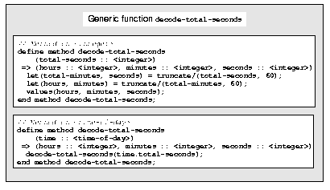

4.6.5 Second method for decode-total-seconds
The decode-total-seconds method is called as follows:
? decode-total-seconds(*your-time-of-day*.total-seconds);
If we envision calling decode-total-seconds frequently to see the hours, minutes, and seconds stored in a <time-of-day> instance, we can make it possible to decode <time-of-day> instances, as well as integers. For example, we can make it possible to make this call:
? decode-total-seconds(*your-time-of-day*);
We can implement this behavior easily, by defining another method for decode-total-seconds, which takes a <time-of-day> instance as its argument:
define method decode-total-seconds
(time :: <time-of-day>)
=> (hours :: <integer>, minutes :: <integer>, seconds :: <integer>)
decode-total-seconds(time.total-seconds);
end method decode-total-seconds;)
Figure 4.1 shows the two methods for the decode-total-seconds generic
function.
 |
Looking at Figure 4.1, we analyze what happens in this call:
? decode-total-seconds(*your-time-of-day*);
1. The argument is an instance of <time-of-day>, so the method on <time-of-day> is called.
2. The body of the method on <time-of-day> calls decode-total-seconds on an instance of <integer>, the value of the total-seconds slot of the <time-of-day> instance. In this call, the argument is an integer, so the method on <integer> is called.
3. The method on <integer> returns three values to its caller -- the method on <time-of-day>. The method on <time-of-day> returns those three
values.
The purpose of the method on <time-of-day> is simply to allow a different kind of argument to be used. The method extracts the integer from the <time-of-day> instance, and calls decode-total-seconds with that integer.